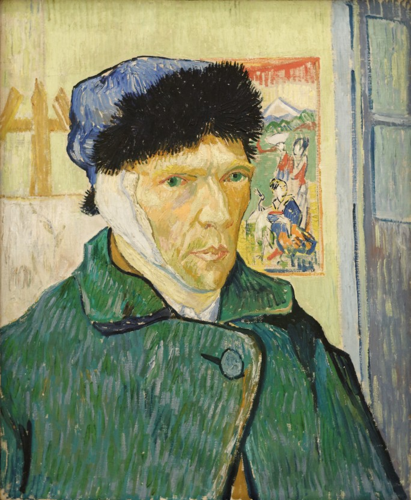

Vincent Willem Van Gogh
What would life be if we had no courage to attempt anything?

Vincent Van Gogh friendship with Gauguin ended after a confrontation with a razor,
when in a rage, he severed part of his own left ear.
- 1853 Vincent Van Gogh is born in Groot-Zundert, Netherlands
- 1864 Van Gogh is sent to boarding school in Zevenbergen
- 1869 Van Gogh is employed by the Hague gallery
- 1880 Van Gogh relocates to Brussels and begins learning the skills needed to become an artist
- 1886 Vincent Van Gogh moves to Paris. Discovers Impressionists and Post Impressionists
- 1888 Van Gogh paints the famous sunflower pieces and begins suffering from mental problems
- 1888 Van Gogh cuts off a portion of his ear and commits himself to a mental asylum in Saint Rémy
- 1890 Van Gogh leaves Saint Rémy and begins contacting his brother Theo
- 1890 Leaves the asylum to begin care in Auvers-sur-Oise under Dr. Paul Gachet, who was recommended by Camille Pissarro
- 1890 July 29 - Vincent Van Gogh dies of a self-inflicted gunshot. He was buried on July 30 at Auvers-sur-Oise
VINCENT VAN GOGH'S BIOGRAPHY: TIMELINE
"I put my heart and my soul into my work, and have lost my mind in the process." - Vincent Willem Van Gogh
Please take some time to read more about the incredible artist that is Vincent Willem Van Gogh
Wikipedia entry.